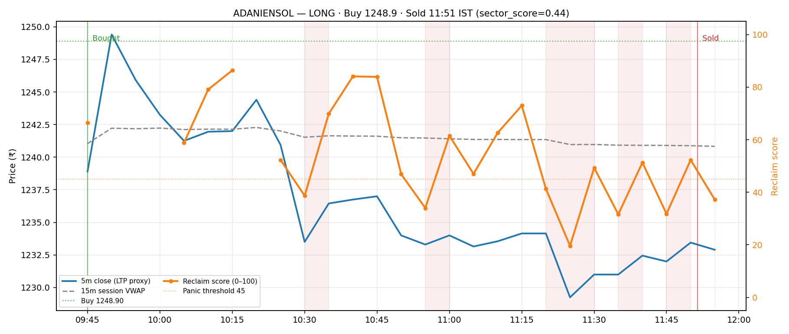
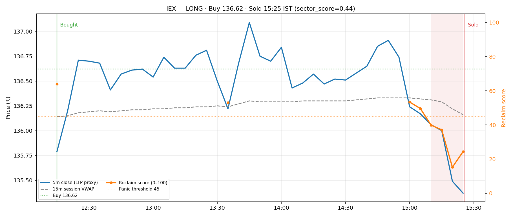
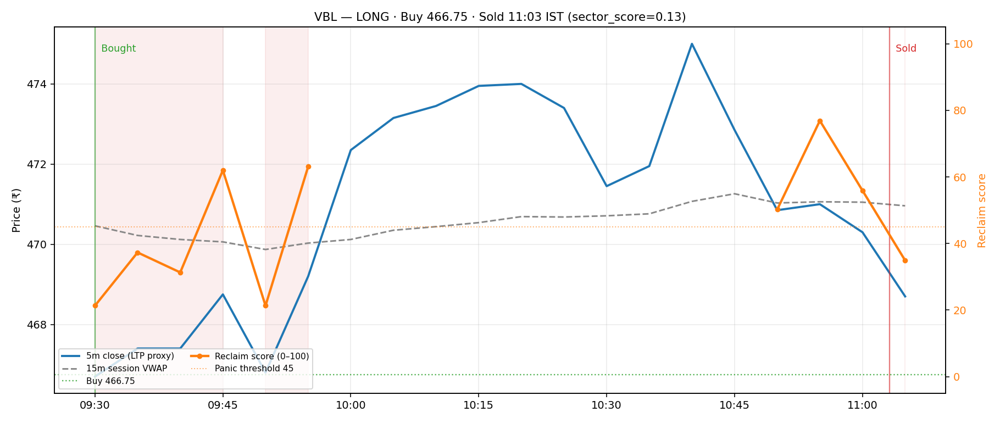
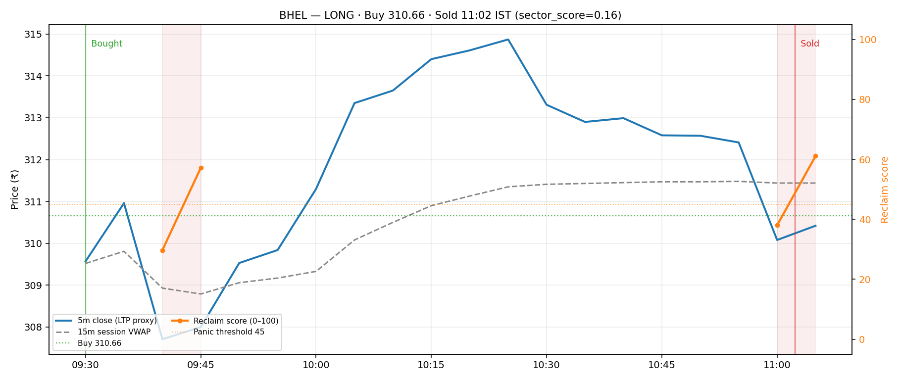
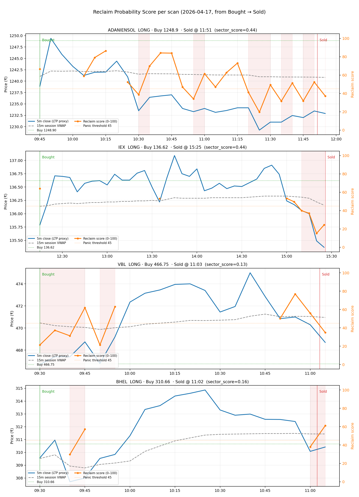

The score is computed only when scan_price is adverse relative to the live 15m session VWAP, so for
a LONG position this means LTP < m15_vwap. It is a weighted blend of four components that,
together, try to say “does this dip look reclaimable in the next few bars?”
sector_score on the row as a slow bias;
symbols in weak sectors lose points.| Condition | Action |
|---|---|
| Price is above VWAP (not adverse) | score N/A — no change to existing exit hints |
| Adverse and score ≥ 45 (calm) |
Do NOT panic —
we actively suppress the soft 15m primary VWAP exits
(15-min Close Below VWAP+Supertrend+EMA,
15-min Momentum Weak + Trend Breakdown).
|
| Adverse and score < 45 (panic) |
Force exit —
set exit_suggested = true with reason
Below 15m VWAP — low reclaim probability (panic),
which makes the Open Positions Sell button blink.
Emergency / hard-stop / trailing-stop exits are always respected.
|

The first scan at 09:45 was briefly below VWAP but with a high score of 66.5 (shallow dip, bullish 5m structure) — correctly held. From ~10:30 onwards price lost VWAP decisively and the score collapsed into the 30–45 band, repeatedly firing panic. Any of these would have blinked the Sell button well before the operator pressed Sell at 11:51.

Silence for two-and-a-half hours is the right behavior: you do not want the algo nagging when price is actually above VWAP. The score only kicks in when the breakdown is real — and when it does, it is unambiguous: 15:10 onwards every scan is in panic.

VBL is a useful stress test: it did trade below VWAP in the first 20–25 minutes after entry, so the Sell button would have blinked at the open while the score was in the panic zone. However, price reclaimed VWAP by 09:55 and ran to +4 rupees. In live trading the operator is free to ignore a panic blink if they have conviction; the gate only suggests exit, it does not auto-sell. If we want fewer false positives on new positions, a simple improvement is to require the first 15m bucket after entry to complete before arming panic (same as how 15m primary exits are gated).

BHEL is the cleanest example of the score helping. It was silent for the entire profitable stretch (09:50 to ~10:55) because price sat above VWAP. It only spoke up briefly at the very start and right at the point of a late minor VWAP dip near 11:00, which also happened to be when the operator actually sold for a profit of ~₹3.
The backend now computes the reclaim score on every GET /smart-futures/daily for every
bought position. When the score fires panic, two things happen on
/smartfuture.html:
sf-btn-sell--blink). This is the existing UI for exit_suggested;
the reclaim gate simply sets that flag for adverse-VWAP + low-score scans.
The gate is conservative by design: it never overrides Emergency, Stop-Loss or Trailing-Stop exits. It only (a) suppresses the soft 15m primary VWAP exit reasons when the score is high, or (b) forces an exit hint when the score is low and price is adverse.

Data: Upstox 5m candles for the session, 15m session VWAP from the same feed used on Smart Futures.
Threshold = 45. Score implementation: backend/services/smart_futures_exit.py →
compute_reclaim_probability_score / apply_reclaim_vwap_gate.